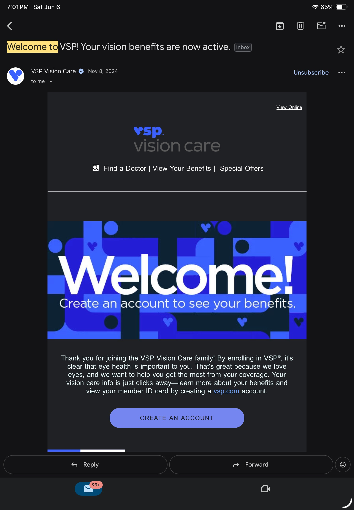

The single most valuable idea I've taken from this module was the idea that privacy settings and older account information on various platforms allow me to see how much information I am sharing with other users, advertisers, etc. When I check application authorizations for each app I have installed, I can determine which applications are authorized to collect information from me (location, microphone, etc.) and then decide whether those applications truly require authorization to do so. I also realized that older accounts in my email inbox may still be a portion of my digital footprint, although I have no recollection of having ever created them. Protecting one's privacy online is like protecting one's privacy in the real world.